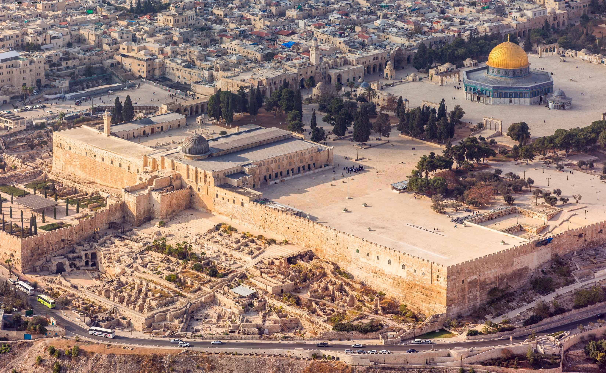

Our Visit to the Holy Land of Israel
Photos, memories, and places from our visit to Israel.
This page is organized by topic so we can easily return to specific places, memories, and photos from our visit to the Holy Land of Israel.
Table of Contents
HOMESearches titles, captions, image descriptions, and hidden photo tags.
General
Photos and memories from this part of our visit to Israel.
Back to Table of ContentsSouthern Stairs
Photos and memories from this part of our visit to Israel.

Southern Stairs Temple Mount 1.

High Res Temple Mount 2.

Southern Stairs Temple Mount 3.

Southern Stairs Temple Mount 4.

Southern Stairs Temple Mount 5.

Southern Stairs Temple Mount 6.

Southern Stairs Temple Mount 7.

Southern Stairs Temple Mount 8.

Southern Stairs Temple Mount 9.

Southern Stairs Temple Mount 10.

Southern Stairs Temple Mount 11.

Southern Stairs Temple Mount 12.

Southern Stairs Temple Mount 13.

Southern Stairs Temple Mount 14.

Southern Stairs Temple Mount 15.

Southern Stairs Temple Mount 16.

Southern Stairs Temple Mount 17.

Southern Stairs Temple Mount 18.

Southern Stairs Temple Mount 19.

Southern Stairs Temple Mount 20.

Southern Stairs Temple Mount 21.

Southern Stairs Temple Mount 22.

Southern Stairs Temple Mount 23.

Southern Stairs Temple Mount 24.

Southern Stairs Temple Mount 25.

Ancient mosaic floor near the Southern Stairs and Temple Mount.

Ancient mosaic floor near the Southern Stairs and Temple Mount 1

Ancient mosaic floor near the Southern Stairs and Temple Mount 2

Southern Stairs Temple Mount 29.

Southern Stairs Temple Mount 30.

Southern Stairs Temple Mount 31.

Southern Stairs Temple Mount 32.

Southern Stairs Temple Mount 33.

Southern Stairs Temple Mount 34.
Temple Mount
Photos and memories from this part of our visit to Israel.

Temple Mount Dome of the Rock 1.

Temple Mount Dome of the Rock 2.

Temple Mount - Complete Plateform, Note the Dome is not the mosque, Located to the extream left of the Dome by the Southern Stairs.
Masada
Photos and memories from this part of our visit to Israel.

Aerial view of Masada’s mountaintop ruins. Herod the Great developed Masada as a palace-fortress beginning around 35 BCE. It later became the final Jewish rebel stronghold during the First Jewish–Roman War, falling to the Romans in 73 or 74 CE. 66 CE: Jewish rebels captured Masada during the First Jewish–Roman War. 73 or 74 CE: The Roman Tenth Legion breached the fortress after its famous siege.

Entrance sign at Masada National Park.

Topographical model of Mount Masada displayed inside the Masada Visitor Center.

Directional sign guiding visitors toward Mount Masada.

Waiting area at Masada’s cable-car station, overlooking the Judean Desert and the cableway machinery.

Masada View from Cable Car.

View from Masada 1.

View from Masada 2.

View from Cable car - ancient Foot path going up the Masada mountain.

Cable Car Passengers 1.

Cable Car Passengers 2.

View from Cable car - ancient Foot path going up the Masada mountain 2.

Man walking on the ancient Foot path going down the Masada mountain.

Masada Cable Car.

View from Masada across the Judean Desert toward the Dead Sea and the mountains of Jordan 1.

View from Masada across the Judean Desert toward the Dead Sea and the mountains of Jordan 2.

View from Masada across the Judean Desert toward the Dead Sea and the mountains of Jordan 3.

View from Masada across the Judean Desert toward the Dead Sea and the mountains of Jordan 4.

View from Masada across the Judean Desert toward the Dead Sea and the mountains of Jordan 5.

View from Masada across the Judean Desert toward the Dead Sea and the mountains of Jordan 6.

View from the Masada cable car overlooking the lower station and Roman Siege Camp A, built during the Roman siege of 73/74 CE.

Approaching Masada’s summit by cable car, with the suspension bridge to the Snake Path Gate and the Dead Sea in the distance.

Roman Siege Camp A and part of the surrounding siege wall, built by the Roman Tenth Legion during the siege of Masada in 73/74 CE..

AI recreation of Roman Siege Camp A and part of the surrounding siege wall, built by the Roman Tenth Legion during the siege of Masada in 73/74 CE..

View from the Masada cable car showing Roman Siege Camps A and B, the surrounding siege wall, and the lower cable-car station. The camps were built by the Roman Tenth Legion during the siege of 73/74 CE. Camp A is the smaller camp near the cable-car station on the right. Camp B is the larger camp farther back on the left and likely served as the principal command and logistics center for the eastern siege sector.

Cable Car View 1.

Cable Car View 2.

Cable Car View 3.

Ruins across Masada’s summit plateau, including remains from Herod’s palace-fortress and the later Jewish rebel occupation 1.

Ruins across Masada’s summit plateau, including remains from Herod’s palace-fortress and the later Jewish rebel occupation 2.

Ruins near Masada’s Snake Path Gate and eastern casemate wall, overlooking the Dead Sea and the mountains of Jordan 1.

Rock-cut cave on Masada’s summit, originally created during quarrying and later reused for shelter or storage.

Defensive lookout tower and casemate wall near the entrance to Masada’s northern complex.

Commandant’s Residence Nxt Image.

Ruins of the Commandant’s Residence at Masada, built around a central courtyard and later used as living quarters by Jewish rebel families.

Original Herodian wall fresco in the Commandant’s Residence, painted to imitate panels of colored marble during the first century BCE 1.

Original Herodian wall fresco in the Commandant’s Residence, painted to imitate panels of colored marble during the first century BCE 2.

Commandant’s Headquarters at Masada, showing the two-column entrance to its reception hall and the Dead Sea in the distance 1.

Commandant’s Headquarters at Masada, showing the two-column entrance to its reception hall and the Dead Sea in the distance 2.

Tour Grp looking at the Masada Model.

Interior passage of Masada’s casemate wall, whose chambers served as living quarters and storage rooms. The black line distinguishes ancient stonework from modern restoration.

Herodian storeroom complex at Masada, where essential food and supplies were stored in long parallel chambers near the Northern Palace.

Ruins of Masada’s Western Palace, Herod’s administrative and ceremonial complex, with the Judean Desert hills beyond.

Masada full working Model.

Masada 44.

Storerooms area.

Restored defensive tower and collapsed casemate wall at Masada, part of Herod’s fortified summit complex 1.

Restored defensive tower and collapsed casemate wall at Masada, part of Herod’s fortified summit complex 2.

The ancient synagogue at Masada, used by the Jewish defenders during the revolt against Rome, AD 66–73.

Interior passage of Masada’s casemate wall, whose chambers served as living quarters and storage rooms. The black line distinguishes ancient stonework from modern restoration 2.

Bathhouse 1.

Bath House 2.

>Bath House MODEL.

>Bath House 4.

Bath House 5.

>Bath House 6.

Bath House 7.

Bath House 8.

Bath House 9.

Bath House 10.

Bath House 11.

Inside the ancient synagogue at Masada, looking through a stone-arched doorway used by the Jewish defenders during the revolt against Rome, AD 66–73.

Bathhouse 13.

An ancient water-storage chamber at Masada, part of the fortress’s carefully designed cistern system that collected precious rainwater in the desert.

View from Masada toward the Dead Sea. The square outline below is a Roman siege camp, one of several built by the Roman army during the siege of Masada around AD 73.

Looking from Masada across the rugged Judean Desert toward the Dead Sea. The steep, barren landscape helped make Masada one of the most defensible fortresses in ancient Israel 1.

Looking from Masada across the rugged Judean Desert toward the Dead Sea. The steep, barren landscape helped make Masada one of the most defensible fortresses in ancient Israe2.

Looking from Masada across the rugged Judean Desert toward the Dead Sea. The steep, barren landscape helped make Masada one of the most defensible fortresses in ancient Israel 3.

aking in the breathtaking view from the summit of Masada, high above the Judean Desert.

Enjoying our visit to Masada among the ancient stone ruins of Herod’s desert fortress..

Looking down from the cliffs of Masada onto the rugged desert terrain below, showing just how isolated and difficult to reach the ancient fortress was.

Ruins of King Herod’s Northern Palace at Masada, including restored columns from the palace complex built in the late first century BC 1.

Ruins of King Herod’s Northern Palace at Masada, including restored columns from the palace complex built in the late first century Bc 2.

A Roman siege camp below Masada, built by the Roman army during the siege of the fortress around AD 73. The camp’s rectangular defensive wall and interior remains can still be seen today 1.

A Roman siege camp below Masada, built by the Roman army during the siege of the fortress around AD 73. The camp’s rectangular defensive wall and interior remains can still be seen today 2.

Close view of the stone walls and foundations of a Roman siege camp below Masada, preserved from the Roman campaign against the Jewish defenders around AD 73.

The front, circular lower terrace of King Herod’s Northern Palace at Masada, built dramatically into the cliffside in the late first century BC.76.

Masada 77.

Masada 78.

Masada 79.

Masada 80.

Masada 81.

Masada 82.

Masada 83.

Masada 84.

Masada 85.

Masada 86.

Masada 87.

Masada 88.

Masada 89.

Masada 90.

Masada 91.

Masada 92.

Masada 93.

Masada 94.

Masada 95.

Masada 96.

Masada 97.

Masada 98.

The Synagog 1

The Synagog 2

The Synagog 3.

The Synagog 4.

The Synagog 5.

Masada 104.

Masada 105.

The RAMP the Romans used to attack Masada 1

Masada Top of the Roman Ramp.

The RAMP the Romans used to attack Masada 2

Looking down the steep cliff below Herod’s Northern Palace at Masada, with the rugged Judean Desert stretching beyond.
Sea Of Gal
Photos and memories from this part of our visit to Israel.

Sea of Gal 1.

Sea of Gal 2.

Sea of Gal 3.

Sea of Gal 4.

Sea of Gal 5.

Sea of Gal 6.

Sea of Gal 7.

Sea of Gal 8.

Sea of Gal 9.

Sea of Gal 10.

Sea of Gal 11.

Sea of Gal 12.

Sea of Gal 13.

Sea of Gal 14.
Temple Institute
Photos and memories from our visit to the Temple Institute in Jerusalem.

Temple Institute entrance.

Temple Institute entrance.

Temple Institute entrance.

Temple Institute entrance.

Temple Institute entrance.

Temple Institute entrance.

Temple Institute Model.

Temple Institute Replica of the Ark of the Covenant at the Temple Institute, with the cherubim on the mercy seat and the carrying poles described in Exodus 25:10–22.

Temple Institute Replica of the white linen garments worn by a Temple priest, displayed at the Temple Institute in Jerusalem.

Temple Institute image Replica of the white linen garments worn by a Temple priest, displayed at the Temple Institute in Jerusalem 2.

Temple Institute replicas of the golden oil flask and the vessels used to clean, prepare, and tend the lamps of the Temple menorah.

Temple Institute Replicas of ornate gold ceremonial pieces associated with the High Priest’s garments, displayed at the Temple Institute. The High Priest’s gold forehead plate bore the words “Holy to the LORD” (Exodus 28:36–38). -1.

Temple Institute Replicas of ornate gold ceremonial pieces associated with the High Priest’s garments, displayed at the Temple Institute. The High Priest’s gold forehead plate bore the words “Holy to the LORD” (Exodus 28:36–38). -2.

Temple Institute Replicas of ornate gold ceremonial pieces associated with the High Priest’s garments, displayed at the Temple Institute. The High Priest’s gold forehead plate bore the words “Holy to the LORD” (Exodus 28:36–38). 3.

A gold-colored replica incense censer at the Temple Institute, representing a sacred vessel used in Temple worship for the burning of incense 1.

A gold-colored replica incense censer at the Temple Institute, representing a sacred vessel used in Temple worship for the burning of incense 2.

A gold-colored replica incense censer at the Temple Institute, representing a sacred vessel used in Temple worship for the burning of incense 3.

Temple Institute Replica of the High Priest’s breastplate at the Temple Institute. Its twelve stones represent the twelve tribes of Israel, as described in Exodus 28:15–21.

Temple Institute image 19.

Temple Institute Temple Institute display of replica priestly service implements, including vessels and long-handled tools used in the Temple for incense, sacred fire, and offerings.

Temple Institute Temple Institute display of a harp and replica silver trumpets. Numbers 10:2 records God’s instruction: “Make thee two trumpets of silver.”

Temple Institute Replica of the biblical kinnor—a lyre or harp associated with King David and Temple worship—displayed at the Temple Institute.

Temple Institute A collection of shofars at the Temple Institute. The ram’s-horn trumpet is associated with worship, sacred gatherings, repentance, and the biblical call to remember God.

Temple Institute Temple Institute replica of the laver and washing vessels used by priests for purification before serving in the Temple, as described in Exodus 30:17–21.

Temple Institute Artwork depicting the High Priest entering the Holy of Holies on Yom Kippur to offer incense before the Ark of the Covenant, as described in Leviticus 16.

Temple Institute Artistic reconstruction of the interior of Solomon’s Temple, showing the Holy Place with its golden lampstands and the veil before the Holy of Holies.

Temple Institute Artistic reconstruction of Temple worship in the courtyard, showing priests offering sacrifices on the altar while other priests sound silver trumpets.

Temple Institute Artwork of the High Priest in his sacred garments, including the ephod and breastplate, ministering before the Ark of the Covenant in the Holy of Holies.

Temple Institute Temple Institute replicas of the laver and its associated vessels, used by priests for ceremonial washing before Temple service.

Temple Institute Replica water vessels displayed at the Temple Institute, representing the containers used by priests for washing and purification before Temple service.

Temple Institute Artwork depicting Abraham and Isaac on Mount Moriah, recalling God’s provision and Abraham’s faith in Genesis 22.

Temple Institute Artistic reconstruction of the Temple’s Holy Place, with priests performing their duties before the veil of the Holy of Holies.

Temple Institute Artistic reconstruction of the Temple in Jerusalem during a time of active worship, with priests serving at the altar and worshippers gathered in the Temple courtyard.

Temple Institute Replica altar tools at the Temple Institute, including a long-handled fork and shovel used by priests in the service and cleaning of the altar.

Temple Institute Temple Institute display of a harp and silver trumpets. The trumpets are based on the instruction in Numbers 10:2: “Make thee two trumpets of silver.”

Temple Institute Temple Model.

Temple Institute Artistic reconstruction of the biblical red-heifer ceremony described in Numbers 19, with priests burning the sacrifice outside the city as part of the purification ritual.

Temple Institute Temple map layout.
Ramparts Walk Citadel
Photos and memories from this part of our visit to Israel.

Ramparts Walk Citadel 1.

Ramparts Walk Citadel 2.

Ramparts Walk Citadel 3.

Ramparts Walk Citadel 4.

Ramparts Walk Citadel 5.

Ramparts Walk Citadel 6.

Ramparts Walk Citadel 7.

Ramparts Walk Citadel 8.

Ramparts Walk Citadel 9.

Ramparts Walk Citadel 10.

Ramparts Walk Citadel 11.

Ramparts Walk Citadel 12.

Ramparts Walk Citadel 13.

Ramparts Walk Citadel 14.

Ramparts Walk Citadel 15.

Ramparts Walk Citadel 16.

Ramparts Walk Citadel 17.

Ramparts Walk Citadel 18.

Ramparts Walk Citadel 19.

Ramparts Walk Citadel 20.

Ramparts Walk Citadel 21.

Ramparts Walk Citadel 22.

Ramparts Walk Citadel 23.

Ramparts Walk Citadel 24.

Ramparts Walk Citadel 25.

Ramparts Walk Citadel 26.

Ramparts Walk Citadel 27.

Ramparts Walk Citadel 28.

Ramparts Walk Citadel 29.

Ramparts Walk Citadel 30.

Ramparts Walk Citadel 31.

Ramparts Walk Citadel 32.

Ramparts Walk Citadel 33.

Ramparts Walk Citadel 34.

Ramparts Walk Citadel 35.

Ramparts Walk Citadel 36.

Ramparts Walk Citadel 37.

Ramparts Walk Citadel 38.

Ramparts Walk Citadel 39.

Ramparts Walk Citadel 40.

Ramparts Walk Citadel 41.

Ramparts Walk Citadel 42.

Ramparts Walk Citadel 43.

Ramparts Walk Citadel 44.

Ramparts Walk Citadel 45.

Ramparts Walk Citadel 46.

Ramparts Walk Citadel 47.

Ramparts Walk Citadel 48.

Ramparts Walk Citadel 49.

Ramparts Walk Citadel 50.

Ramparts Walk Citadel 51.

Ramparts Walk Citadel 52.

Ramparts Walk Citadel 53.

Ramparts Walk Citadel 54.

Ramparts Walk Citadel 55.

Ramparts Walk Citadel 56.

Ramparts Walk Citadel 57.

Ramparts Walk Citadel 58.

Ramparts Walk Citadel 59.

Ramparts Walk Citadel 60.

Ramparts Walk Citadel 61.

Ramparts Walk Citadel 62.

Ramparts Walk Citadel 63.

Ramparts Walk Citadel 64.

Ramparts Walk Citadel 65.

Ramparts Walk Citadel 66.

Ramparts Walk Citadel 67.

Ramparts Walk Citadel 68.

Ramparts Walk Citadel 69.

Ramparts Walk Citadel 70.

Ramparts Walk Citadel 71.

Ramparts Walk Citadel 72.

Ramparts Walk Citadel 73.

Ramparts Walk Citadel 74.

Ramparts Walk Citadel 75.

Ramparts Walk Citadel 76.

Ramparts Walk Citadel 77.

Ramparts Walk Citadel 78.

Ramparts Walk Citadel 79.

Ramparts Walk Citadel 80.

Ramparts Walk Citadel 81.

Ramparts Walk Citadel 82.

Ramparts Walk Citadel 83.

Ramparts Walk Citadel 84.

Ramparts Walk Citadel 85.

Ramparts Walk Citadel 86.

Ramparts Walk Citadel 87.

Ramparts Walk Citadel 88.

Ramparts Walk Citadel 89.

Ramparts Walk Citadel 90.

Ramparts Walk Citadel 91.

Ramparts Walk Citadel 92.

Ramparts Walk Citadel 93.

Ramparts Walk Citadel 94.

Ramparts Walk Citadel 95.
Wet Tunnel Hezekiah
Photos and memories from this part of our visit to Israel.

Hezekiah’s Tunnel 1.

Hezekiah’s Tunnel 2.

Hezekiah’s Tunnel 3.

Hezekiah’s Tunnel 4.

Hezekiah’s Tunnel 5.

Why Hezekiah’s Tunnel was built.
Megiddo
Photos and memories from this part of our visit to Israel.

Megiddo history and prophecy.

Megiddo image 2.

Megiddo image 3.

Megiddo image 4.

Megiddo image 5.

Megiddo image 6.

Megiddo image 7.

Megiddo image 8.

Megiddo image 9.

Megiddo image 10.

Megiddo image 11.

Megiddo image 12.

Megiddo image 13.

Megiddo image 14.

Megiddo image 15.

Megiddo image 16.

Megiddo image 17.

Megiddo image 18.

Megiddo image 19.

Megiddo image 20.

Megiddo image 21.

Megiddo image 22.

Megiddo image 23.

Megiddo image 24.

Megiddo image 25.

Megiddo image 26.

Megiddo image 27.

Megiddo image 28.

Megiddo image 29.

Megiddo image 30.

Megiddo image 31.

Megiddo image 32.

Megiddo image 33.

Megiddo image 34.

Megiddo image 35.

Megiddo image 36.

Megiddo image 37.

Megiddo image 38.

Megiddo image 39.

Megiddo image 40.

Megiddo image 41.

Megiddo image 42.

Megiddo image 43.

Megiddo image 44.

Megiddo image 45.

Megiddo image 46.

Megiddo image 47.

Megiddo image 48.

Megiddo image 49.

Megiddo image 50.

Megiddo image 51.

Megiddo image 52.

Megiddo image 53.

Megiddo image 54.

Megiddo image 55.

Megiddo image 56.

Megiddo image 57.

Megiddo image 58.

Megiddo image 59.

Megiddo image 60.

Megiddo image 61.

Megiddo image 62.

Megiddo image 63.

Megiddo image 64.

Megiddo image 65.

Megiddo image 66.

Megiddo image 67.

Megiddo image 68.

AI reconstruction based on Megiddo images 31 and 32.
Golden Gate
Photos and memories from this part of our visit to Israel.

Golden Gate image 1.

Golden Gate image 2.

Golden Gate image 3.

Golden Gate image 4.

Golden Gate image 5.

Golden Gate image 6.

Golden Gate image 7.

Golden Gate image 8.

Golden Gate image 9.

We are referring to the left side of Golden Gate image 4.
David & Goliath
Photos and memories from this part of our visit to Israel.

David & Goliath image 1.

David & Goliath image 2.

David & Goliath image 3.

David & Goliath image 4.

David & Goliath image 5.

David & Goliath image 6.

David & Goliath image 7.
Jordan Baptism
Photos and memories from this part of our visit to Israel.

Baptism River Jordan image 1.

Baptism River Jordan image 2.

Baptism River Jordan image 3.

Baptism River Jordan image 4.

Baptism River Jordan image 5.

Baptism River Jordan image 6.
Caesarea
Photos and memories from this part of our visit to Israel.

Caesarea image 1.

Caesarea image 2.

Caesarea image 3.

Caesarea image 4.

Caesarea image 5.

Caesarea image 6.

Caesarea image 7.

Caesarea image 8.

Caesarea image 9.

Caesarea image 10.

Caesarea image 11.

Caesarea image 12.

Caesarea image 13.

Caesarea image 14.

Caesarea image 15.

Caesarea image 16.

Caesarea image 17.

Caesarea image 18.

Caesarea image 19.

Caesarea image 20.

Caesarea image 21.

Caesarea image 22.

Caesarea image 23.

Caesarea image 24.

Caesarea image 25.

Caesarea image 26.

Caesarea image 27.

Caesarea image 28.

Caesarea image 29.

Caesarea image 30.

Caesarea image 31.

Caesarea image 32.

Caesarea image 33.

Caesarea image 34.

Caesarea image 35.

Caesarea image 36.

Caesarea image 37.

Caesarea image 38.

Caesarea image 39.

Caesarea image 40.

Caesarea image 41.

Caesarea image 42.

Caesarea image 43.

Caesarea image 44.

Caesarea image 45.

Caesarea image 46.

Caesarea image 47.

Caesarea image 48.

Caesarea image 49.

Caesarea image 50.

Caesarea image 51.

Caesarea image 52.

Caesarea image 53.

Caesarea image 54.

Caesarea image 55.

Caesarea image 56.

Caesarea image 57.

Caesarea image 58.

Caesarea image 59.

Caesarea image 60.

Caesarea image 61.

Caesarea image 62.

Caesarea image 63.

Caesarea image 64.

Caesarea image 65.

Caesarea image 66.

Caesarea image 67.

Caesarea image 68.

Caesarea image 69.

Caesarea image 70.
Garden of Gethsemane
Photos and memories from this part of our visit to Israel.

Gethsemane image 1.

Gethsemane image 2.

Gethsemane image 3.

Gethsemane image 4.

Gethsemane image 5.

Gethsemane image 6.

Gethsemane image 7.

Gethsemane image 8.

Gethsemane image 9.

Gethsemane image 10.

Gethsemane image 11.

Gethsemane image 12.

Gethsemane image 13.

Gethsemane image 14.

Gethsemane image 15.

Gethsemane image 16.

Gethsemane image 17.

Gethsemane image 18.

Gethsemane image 19.

Gethsemane image 20.

Gethsemane image 21.

Gethsemane image 22.

Gethsemane image 23.

Gethsemane image 24.

Gethsemane image 25.

Gethsemane image 26.

Gethsemane image 27.

Gethsemane image 28.
Jerusalem Shopping
Photos and memories from this part of our visit to Israel.

Jerusalem Shopping image 1.

Jerusalem Shopping image 2.

Jerusalem Shopping image 3.

Jerusalem Shopping image 4.

Jerusalem Shopping image 5.

Jerusalem Shopping image 6.

Jerusalem Shopping image 7.

Jerusalem Shopping image 8.

Jerusalem Shopping image 9.

Jerusalem Shopping image 10.
Garden Tomb
Photos and memories from this part of our visit to Israel.

Garden Tomb image 1.

Garden Tomb image 2.

Garden Tomb image 3.

Garden Tomb image 4.

Garden Tomb image 5.

Garden Tomb image 6.

Garden Tomb image 7.

Garden Tomb image 8.

Garden Tomb image 9.

Garden Tomb image 10.

Garden Tomb image 11.

Garden Tomb image 12.

Garden Tomb image 13.

Garden Tomb image 14.

Garden Tomb image 15.

Garden Tomb image 16.

Garden Tomb image 17.

Garden Tomb image 18.

Garden Tomb image 19.

Garden Tomb image 20.

Garden Tomb image 21.

Garden Tomb image 22.

Garden Tomb image 23.

Garden Tomb image 24.
Model City
Photos and memories from this part of our visit to Israel.

Model City 1.

Model City 2.

Model City 3.

Model City 4.

Model City 5.

Model City 6.

Model City 7.

Model City 8.

Model City 10.

Model City 11.

Model City 12.

Model City 13.

Model City 14.

Model City 15.

Model City 16.

Model City 17.

Model City 18.

Model City 19.

Model City 20.

Model City 21.

Model City 22.

Model City 23.

Model City 24.

Model City 25.

Model City 26.

Model City 27.

Model City 28.

Model City 29.

Model City 30.

Model City 31.

Model City 32.
Mount of Beatitudes
Photos and memories from this part of our visit to Israel.

Mount of Beatitudes 1.

Mount of Beatitudes 2.

Mount of Beatitudes 3.

Mount of Beatitudes 4.

Mount of Beatitudes 5.

Mount of Beatitudes 6.

Mount of Beatitudes 7.

Mount of Beatitudes 8.

Mount of Beatitudes 9.

Mount of Beatitudes 10.

Mount of Beatitudes 11.

Mount of Beatitudes 12.

Mount of Beatitudes 13.

Mount of Beatitudes 14.

Mount of Beatitudes 15.

Mount of Beatitudes 16.

Mount of Beatitudes 17.

Mount of Beatitudes 18.

Mount of Beatitudes 19.

Mount of Beatitudes 20.

Mount of Beatitudes 21.

Mount of Beatitudes 22.

Mount of Beatitudes 23.

Mount of Beatitudes 24.

Mount of Beatitudes 25.

Mount of Beatitudes 26.

Mount of Beatitudes 27.

Mount of Beatitudes 28.

Mount of Beatitudes 29.

Mount of Beatitudes 30 — Where Jesus Walked and Taught.
Western Wall & Rabbi's Tunnel
Photos and memories from this part of our visit to Israel.

Western Wall and Rabbi's Tunnel 1.

Western Wall and Rabbi's Tunnel 2.

Western Wall and Rabbi's Tunnel 3.

Western Wall and Rabbi's Tunnel 4.

Western Wall and Rabbi's Tunnel 5.

Western Wall and Rabbi's Tunnel 6.

Western Wall and Rabbi's Tunnel 7.

Western Wall and Rabbi's Tunnel 8.

Western Wall and Rabbi's Tunnel 9.

Western Wall and Rabbi's Tunnel 10.

Western Wall and Rabbi's Tunnel 11.

Western Wall and Rabbi's Tunnel 12.

Western Wall and Rabbi's Tunnel 13.

Western Wall and Rabbi's Tunnel 14.

Western Wall and Rabbi's Tunnel 15.

Western Wall and Rabbi's Tunnel 16.

Western Wall and Rabbi's Tunnel 17.

Western Wall and Rabbi's Tunnel 18.

Western Wall and Rabbi's Tunnel 19.

Western Wall and Rabbi's Tunnel 20.

Western Wall and Rabbi's Tunnel 21.

Western Wall and Rabbi's Tunnel 22.

Western Wall and Rabbi's Tunnel 23.

Western Wall and Rabbi's Tunnel 24.

Western Wall and Rabbi's Tunnel 25.

Western Wall and Rabbi's Tunnel 26.

Western Wall and Rabbi's Tunnel 27.

Western Wall and Rabbi's Tunnel 28.

Western Wall and Rabbi's Tunnel 29.

Western Wall and Rabbi's Tunnel 30.

Western Wall and Rabbi's Tunnel 31.

Western Wall and Rabbi's Tunnel 32.

Western Wall and Rabbi's Tunnel 33.

Western Wall and Rabbi's Tunnel 34.

Western Wall and Rabbi's Tunnel 35.

Western Wall and Rabbi's Tunnel 36.

Western Wall and Rabbi's Tunnel 37.

Western Wall and Rabbi's Tunnel 38.

Western Wall and Rabbi's Tunnel 39.

Western Wall and Rabbi's Tunnel 40.

Western Wall and Rabbi's Tunnel 41.

Western Wall and Rabbi's Tunnel 42.

Western Wall and Rabbi's Tunnel 43.

Western Wall and Rabbi's Tunnel 44.
Capharnaum
Photos and memories from this part of our visit to Israel.

Capharnaum 1.

Capharnaum 2.

Capharnaum 3.

Capharnaum 4.

Capharnaum 5.

Capharnaum 6.

Capharnaum 7.

Capharnaum 8.

Capharnaum 9.

Capharnaum 10.

Capharnaum 11.

Capharnaum 12.

Capharnaum 13.

Capharnaum 14.

Capharnaum 15.

Capharnaum 16.

Capharnaum 17.

Capharnaum 18.

Capharnaum 19.

Capharnaum 20.

Capharnaum 21.

Capharnaum 22.

Capharnaum 23.

Capharnaum 24.

Capharnaum 25.

Capharnaum 26.

Capharnaum 27.

Capharnaum 28.

Capharnaum 29.

Capharnaum 30.

Capharnaum 31.

Capharnaum 32.

Capharnaum 33.

Capharnaum 34.

Capharnaum 35.

Capharnaum 36.

Capharnaum 37.

Capharnaum 38.

Capharnaum 39.

Capharnaum 40.

Capharnaum 41.

Capharnaum 42.

Capharnaum 43.

Capharnaum 44.

Capharnaum 45.

Capharnaum 46.

Capharnaum 47.

Capharnaum 48.

Capharnaum 49.

Capharnaum 50.

Capharnaum 51.

Capharnaum 52.

Capharnaum 53.

Capharnaum 54.

Capharnaum 55.

Capharnaum 56.

Capharnaum 57.

Capharnaum 58.

Capharnaum 59.

Capharnaum 60.

Capharnaum 61.

Capharnaum 62.

Capharnaum 63.

Capharnaum 64.

Capharnaum 65.

Capharnaum 66.

Capharnaum 67.

Capharnaum 68.

Capharnaum 69.

Capharnaum 70.

Capharnaum 71.

Capharnaum 72.

Capharnaum 73.

Capharnaum 74.

Capharnaum 75.
City of David
Photos and memories from this part of our visit to Israel.

City of David 1.

City of David 2.

City of David 3.

City of David 4.

City of David 5.

City of David 6.

City of David 7.

City of David 8.

City of David 9.

City of David 10.

City of David 11.

City of David 12.
Mount of Olives
Photos and memories from this part of our visit to Israel.

Mount of Olives 1.

Mount of Olives 2.

Mount of Olives 3.

Mount of Olives 4.

Mount of Olives 5.

Mount of Olives 6.

Mount of Olives 7.

Mount of Olives 8.

Mount of Olives 9.

Mount of Olives 10.

Mount of Olives 11.

Mount of Olives 12.

Mount of Olives 13.

Mount of Olives 14.

Mount of Olives 15.

Mount of Olives 16.

Mount of Olives 17.

Mount of Olives 18.

Mount of Olives 19.

Mount of Olives 20.

Mount of Olives 21.

Mount of Olives 22.

Mount of Olives 23.

Mount of Olives 24.

Mount of Olives 25.

Mount of Olives 26.

Mount of Olives 27.

Mount of Olives 28.
Burn't House
Photos and memories from this part of our visit to Israel.

Burn't House 1.

Burn't House 2.

Burn't House 3.

Burn't House 4.

Burn't House 5.

Burn't House 6.

Burn't House 7.

Burn't House 8.

Burn't House 9.

Burn't House 10.
Robinson's Arch
Photos and memories from this part of our visit to Israel.

Robinson's Arch 1.

Robinson's Arch 2.

Robinson's Arch 3.

Robinson's Arch 4.

Robinson's Arch 5.

Robinson's Arch 6.
Nahariya Mission
Photos and memories from this part of our visit to Israel.
+
2011 Mission 1.

2011 Mission 2.

2011 Mission 3.

2011 Mission 4.

2011 Mission 5.

2011 Mission 6.

2011 Mission 7.

2011 Mission 8.

2011 Mission 9.

2011 Mission 10.

2011 Mission 11.

2011 Mission 12.

2011 Mission 13.

2011 Mission 14.

2011 Mission 15.

2011 Mission 16.

2011 Mission 17.

2011 Mission 18.

2011 Mission 19.

2011 Mission 20.

2011 Mission 21.

2011 Mission 22.

2011 Mission 23.

2011 Mission 24.

2011 Mission 25.

2011 Mission 26.

2011 Mission 27.

2011 Mission 28.

2011 Mission 29.

2011 Mission 30.

2011 Mission 31.

2011 Mission 32.

2011 Mission 33.

2011 Mission 34.

2011 Mission 35.

2011 Mission 36.

2011 Mission 37.

2011 Mission 38.

2011 Mission 39.

2011 Mission 40.

2011 Mission 41.

2011 Mission 42.

2011 Mission 43.

2011 Mission 44.

2011 Mission 45.

2011 Mission 46.

2011 Mission 47.

2011 Mission 48.

2011 Mission 49.

2011 Mission 50.

2011 Mission 51.

2011 Mission 52.

2011 Mission 53.

2011 Mission 54.

2011 Mission 55.

2011 Mission 56.

2011 Mission 57.

2011 Mission 58.

2011 Mission 59.

2011 Mission 60.

2011 Mission 61.

2011 Mission 62.

2011 Mission 63.

2011 Mission 64.

2011 Mission 65.

2011 Mission 66.

2011 Mission 67.

2011 Mission 68.

2011 Mission 69.

2011 Mission 70.

2011 Mission 71.

2011 Mission 72.

2011 Mission 73.

2011 Mission 74.

2011 Mission 75.

2011 Mission 76.

2011 Mission 77.

2011 Mission 78.

2011 Mission 79.

2011 Mission 80.

2011 Mission 81.

2011 Mission 82.

2011 Mission 83.

2011 Mission 84.

2011 Mission 85.

2011 Mission 86.

2011 Mission 87.

2011 Mission 88.

2011 Mission 89.

2011 Mission 90.

2011 Mission 91.

2011 Mission 92.

2011 Mission 93.

2011 Mission 94.

2011 Mission 95.

2011 Mission 96.

2011 Mission 97.

2011 Mission 98.

2011 Mission 99.

2011 Mission 100.

2011 Mission 101.

2011 Mission 102.

2011 Mission 103.

2011 Mission 104.

2011 Mission 105.

2011 Mission 106.

2011 Mission 107.

2011 Mission 108.

2011 Mission 109.

2011 Mission 110.

2011 Mission 111.

2011 Mission 112.

2011 Mission 113.

2011 Mission 114.

2011 Mission 115.

2011 Mission 116.

2011 Mission 117.

2011 Mission 118.

2011 Mission 119.

2011 Mission 120.

2011 Mission 121.

2011 Mission 122.

2011 Mission 123.

2011 Mission 124.

2011 Mission 125.

2011 Mission 126.

2011 Mission 127.

2011 Mission 128.

2011 Mission 129.

2011 Mission 130.
Bar Mitzvah
Photos and memories from this part of our visit to Israel.

Bar Mitzvah 1.

Bar Mitzvah 2.

Bar Mitzvah 3.

Bar Mitzvah 4.

Bar Mitzvah 5.

Bar Mitzvah 6.
Alice, David and Tom pics
Photos and memories from this part of our visit to Israel.
Back to Table of ContentsRosh HaNnikra Caves
Photos and memories from this part of our visit to Israel.
+
Rosh HaNnikra Caves 1.

Rosh HaNnikra Caves 2.

Rosh HaNnikra Caves 3.

Rosh HaNnikra Caves 4.

Rosh HaNnikra Caves 5.

Rosh HaNnikra Caves 6.

Rosh HaNnikra Caves 7.

Rosh HaNnikra Caves 8.

Rosh HaNnikra Caves 9.

Rosh HaNnikra Caves 10.

Rosh HaNnikra Caves 11.

Rosh HaNnikra Caves 12.

Rosh HaNnikra Caves 13.

Rosh HaNnikra Caves 14.

Rosh HaNnikra Caves 15.

Rosh HaNnikra Caves 16.

Rosh HaNnikra Caves 17.

Rosh HaNnikra Caves 18.

Rosh HaNnikra Caves 19.

Rosh HaNnikra Caves 20.

Rosh HaNnikra Caves 21.

Rosh HaNnikra Caves 22.

Rosh HaNnikra Caves 23.

Rosh HaNnikra Caves 24.

Rosh HaNnikra Caves 25.

Rosh HaNnikra Caves 26.

Rosh HaNnikra Caves 27.

Rosh HaNnikra Caves 28.

Rosh HaNnikra Caves 29.

Rosh HaNnikra Caves 30.

Rosh HaNnikra Caves 31.

Rosh HaNnikra Caves 32.

Rosh HaNnikra Caves 33.

Rosh HaNnikra Caves 34.

Rosh HaNnikra Caves 35.

Rosh HaNnikra Caves 36.

Rosh HaNnikra Caves 37.

Rosh HaNnikra Caves 38.

Rosh HaNnikra Caves 39.

Rosh HaNnikra Caves 40.

Rosh HaNnikra Caves 41.

Rosh HaNnikra Caves 42.

Rosh HaNnikra Caves 43.

Rosh HaNnikra Caves 44.

Rosh HaNnikra Caves 45.

Rosh HaNnikra Caves 46.

Rosh HaNnikra Caves 47.

Rosh HaNnikra Caves 48.

Rosh HaNnikra Caves 49.

Rosh HaNnikra Caves 50.

Rosh HaNnikra Caves 51.

Rosh HaNnikra Caves 52.

Rosh HaNnikra Caves 53.

Rosh HaNnikra Caves 54.

Rosh HaNnikra Caves 55.

Rosh HaNnikra Caves 56.

Rosh HaNnikra Caves 57.

Rosh HaNnikra Caves 58.

Rosh HaNnikra Caves 59.

Rosh HaNnikra Caves 60.

Rosh HaNnikra Caves 61.

Rosh HaNnikra Caves 62.

Rosh HaNnikra Caves 63.

Rosh HaNnikra Caves 64.

Rosh HaNnikra Caves 65.

Rosh HaNnikra Caves 66.

Rosh HaNnikra Caves 67.

Rosh HaNnikra Caves 68.

Rosh HaNnikra Caves 69.

Rosh HaNnikra Caves 70.

Rosh HaNnikra Caves 71.

Rosh HaNnikra Caves 72.

Rosh HaNnikra Caves 73.

Rosh HaNnikra Caves 74.
Tel-Aviv
Photos and memories from this part of our visit to Israel.
Back to Table of ContentsMisc Pictures
Photos and memories from this part of our visit to Israel.
Back to Table of Contents